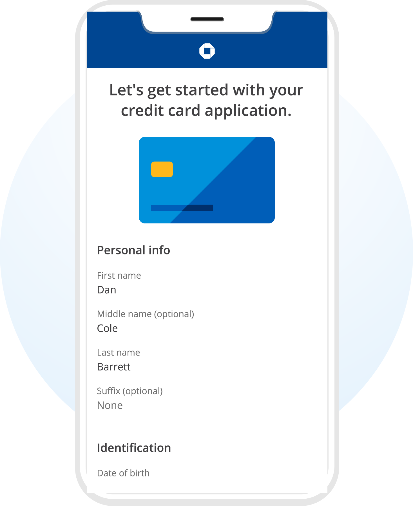

Projects
0-1 Product Validation & Cryptographic Onboarding for Civic Advocacy Platform (Stealth Startup)
Project Overview & Ambiguity
As Founding Researcher operating in a blank-slate environment on a 3-person core team, I architected the research strategy and validity frameworks for a 0-1 civic advocacy platform utilizing blockchain digital IDs. Without established industry playbooks for consumer decentralized identity, my mandate was to translate user behavioral insights directly into technical protocols, UI specifications, and launch validation frameworks alongside engineering and product design.
Diagnosing Trust & Cryptographic Hurdles
User research uncovered critical psychological and safety barriers: users were hesitant to connect cryptographic identities to real-world advocacy without absolute clarity on privacy and anonymity guarantees. To resolve this friction, I diagnosed onboarding drop-off points and collaborated with engineering to design transparent, user-facing cryptographic explanations. This demystified zero-knowledge concepts into intuitive trust cues that transformed user apprehension into confidence.
Impact & Pilot Conversion
By systematically aligning protocol security with user mental models, we significantly improved onboarding funnel conversion. The validated frameworks directly guided platform development and unlocked successful multi-market pilot deployments across California and New York, successfully onboarding hundreds of verified civic participants onto the protocol.
0-1 Trust & Identity Framework
Decentralized Identity • User-Facing Cryptographic Transparency • Pilot Conversion (CA & NY)
Quantitative Research for Meta's 0-1 Agentic AI Business Messaging & Launch Gating Thresholds
Project Overview
The primary objective was researching the user and merchant value of AI-powered agentic business messaging transitioning from concept to execution across Messenger and Instagram. Understanding how AI could perform as an autonomous substitute for traditional human customer support interactions—delivering real-time product information, catalog discovery, and inquiry resolution—was especially critical for small-to-medium businesses (SMBs) with limited operational bandwidth.
Controlled Experiments & Launch Gating
As the Quantitative UX Researcher, I led multinational alpha, beta, and general availability studies combining telemetry interaction logs with attitudinal survey data. Crucially, I designed controlled experimentation frameworks to establish the strict quantitative thresholds that gated global Beta and General Availability (GA) launch decisions. By triangulating behavioral interaction metrics with satisfaction ratings, we established rigorous guardrails around AI hallucination risk, response latency, and consumer handoff expectations.
Technical Approach & Data Recovery
For data analysis, I utilized internal telemetry pipelines, SQL for data extraction, and Python for statistical manipulation. When we encountered broken eligibility criteria in survey logging pipelines, I engineered alternative multi-field verification heuristics to determine whether users had interacted with an AI agent or a human agent. I performed distribution diagnostics to verify whether pipeline dropouts were random or systemic, preserving data integrity and preventing costly multi-week launch delays through post-stratification survey weighting.
Impact & Strategic Findings
The research provided foundational validation for executive stakeholders:
- Consumers experienced equal or improved satisfaction when interacting with agentic AI compared to delayed human responses, driven by immediate resolution.
- SMB merchants realized significant time savings, allowing them to redeploy scarce operational hours into business expansion and sales fulfillment.
- Established objective behavioral benchmarks that became the enterprise standard for AI agent performance across Meta messaging surfaces.

Eliminating Liquidity Barriers Across Meta's SMB Automated Campaign Workflows
Challenge & Context
Within Meta's SMB advertising suite, self-serve merchants frequently struggled with ad setup complexity, budget pacing uncertainties, and audience targeting bottlenecks, leading to premature campaign abandonment and stalled ad spend liquidity.
Mixed-Methods Research Execution
I executed comprehensive mixed-methods research combining large-scale behavioral log analysis, user funnel analytics, merchant interviews, and attitudinal surveys. We mapped the end-to-end advertiser journey to pinpoint exact UX friction points causing liquidity stalls within automated campaign workflows.
Impact on Adoption & Ad-Spend Retention
The research diagnosed key drop-off mechanisms in budget configuration and audience expansion settings. By partnering directly with product managers and engineering squads to redesign guidance tooltips, automated targeting presets, and error-recovery flows, we increased self-serve feature adoption and significantly improved long-term merchant ad-spend retention.
SMB Advertising Suite
Behavioral Log Analysis • Liquidity Diagnostics • Self-Serve Ad Retention
Pulse of Business Messaging: Ecosystem-Wide Global Tracking Across 15 Languages (n=100,000+/mo)
Project Overview & Ecosystem Scale
As the Quantitative UX Researcher leading ecosystem-wide tracking, I architected and managed a continuous global research initiative monitoring consumer sentiment and messaging health across Messenger, Instagram, and WhatsApp. The tracking program captured key indicators—value perception, message relevance, notification fatigue, and negative interaction reports—serving as a critical guardrail against ecosystem over-messaging. With over 100,000 monthly verified responses across 15 languages, this initiative delivered uninterrupted visibility into global consumer sentiment and regional messaging trends.
Technical Infrastructure & Data Pipeline
My ownership encompassed end-to-end survey architecture, sample volume optimization, automated SQL ingestion pipelines, and interactive executive dashboards. By applying advanced survey weighting and post-stratification techniques across heterogeneous international markets, I ensured findings accurately reflected active user distributions despite regional variance in engagement rates.
Impact & Product Safeguards
Insights directly informed high-stakes product decisions, including regional message frequency capping, delivery timing optimizations based on circadian usage patterns, and notifications hygiene policies that preserved long-term platform health.
Microsoft Hybrid Workstream Survey Methodology Overhaul
Project Context & Challenge
Microsoft maintains a rigorous methodological process involving internal surveys used to test workplace products and collaboration patterns. My role supported the Hybrid workstream focusing on improving employee experiences across modern working environments. With 2,000+ responses each month, our team was capturing valuable sentiment but faced a severe throughput bottleneck: manual processing of qualitative open-ended responses and static newsletter updates dominated our weekly sprint cycles.
Methodology Innovation
To unlock actionable intelligence from survey data, I proposed and implemented a comprehensive overhaul of the survey methodology:
- Architected a modular survey structure, breaking monolithic instruments into focused, lightweight micro-surveys.
- Implemented dynamic matrix sampling to serve different question sets across respondent cohorts, reducing individual survey burden from dozens of items to fewer than 10.
- Increased participation response rates while simultaneously expanding coverage across diverse facets of the distributed employee lifecycle.
- Balanced structured closed-ended items for immediate quantification with standardized open-ended "Other" captures for emergent sentiment detection.
A/B Testing Chase's Acquisition Pipelines & Driving $20M Monthly Revenue Lift
Role & Experimentation Architecture
At JPMorgan Chase, I supported enterprise-wide initiatives enhancing digital customer acquisition across owned public and authenticated portals. I helped engineer the foundational causal measurement frameworks that democratized A/B testing across dozens of product squads.
Full-Journey Causal Optimization
Traditional reporting suffered from siloed measurement: teams tracked click-through rates from owned ads to landing pages, or application starts to completions, ignoring mid-funnel drop-offs and financial qualification mismatches. Through rigorous causal experimentation and end-to-end journey modeling, we connected upstream intent signals to downstream underwriting qualification.
Key Initiatives & Tangible Impact
- Implemented personalized product recommendation algorithms based on customer profile signals and banking relationship history.
- Overhauled digital enrollment flows to eliminate friction points while maintaining compliance verification.
- Iteratively evaluated sequential releases using causal inference to isolate true lift from seasonal macro fluctuations.
